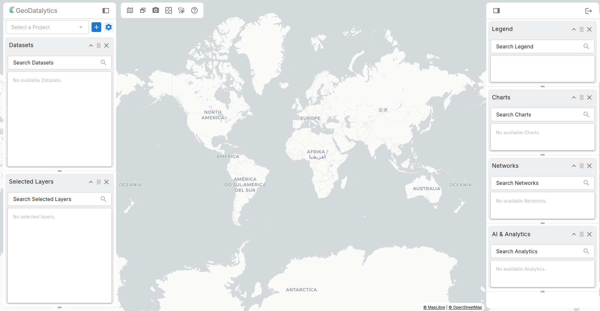
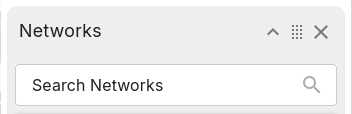
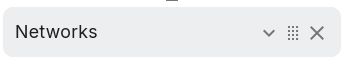
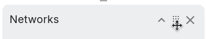
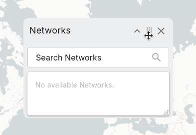
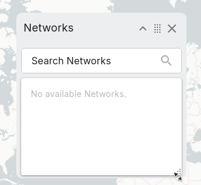
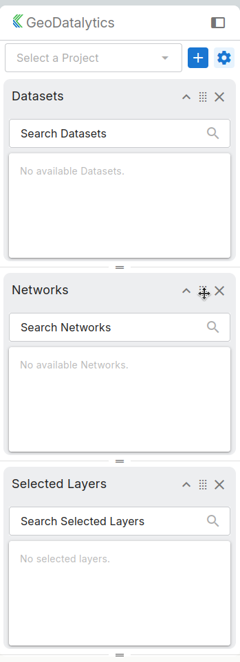
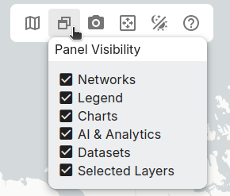

Introduction
The primary user interface of GeoDatalytics is organized into a set of six panels that are docked to the left and right sidebars by default. Other sections of this documentation will cover each panel in detail. This section will cover the basics of interacting with any of these panels.

Basic Controls
The title section of each panel includes the name of the panel, three icons, and a search bar to filter the content of the panel. The three icons shown in the upper right hand corner next to the panel title offer some basic controls for the visibility and positioning of the panel.

The caret icon allows you to collapse the panel to a minimum height. Clicking the caret again will expand the panel to its default height.

The dot grid icon is a handle to grab and drag the panel. Hovering over this icon will change the cursor to a repositioning icon.

Click and hold the icon to undock the panel from its current sidebar and move it anywhere on the screen. Panels may be positioned over the map and act as floating panels; collapsing the sidebars will no longer affect their visibility when floating.

When a panel is floating, an additional icon will appear in the bottom right corner. This triangular dot grid is another handle to grab the corner of the panel and drag to resize it. Hovering over this handle will change the cursor to a diagonal resize icon.

Dragging a panel into either the left or right sidebar will snap the panel position to an available space in that sidebar, docking it. You can move the panel up and down within the sidebar to reorder the panels.

Lastly, the “X” icon in the top right corner of a panel will close the panel, completely removing it from the interface. You can bring the panel back via the panel visibility menu available in the controls bar.
